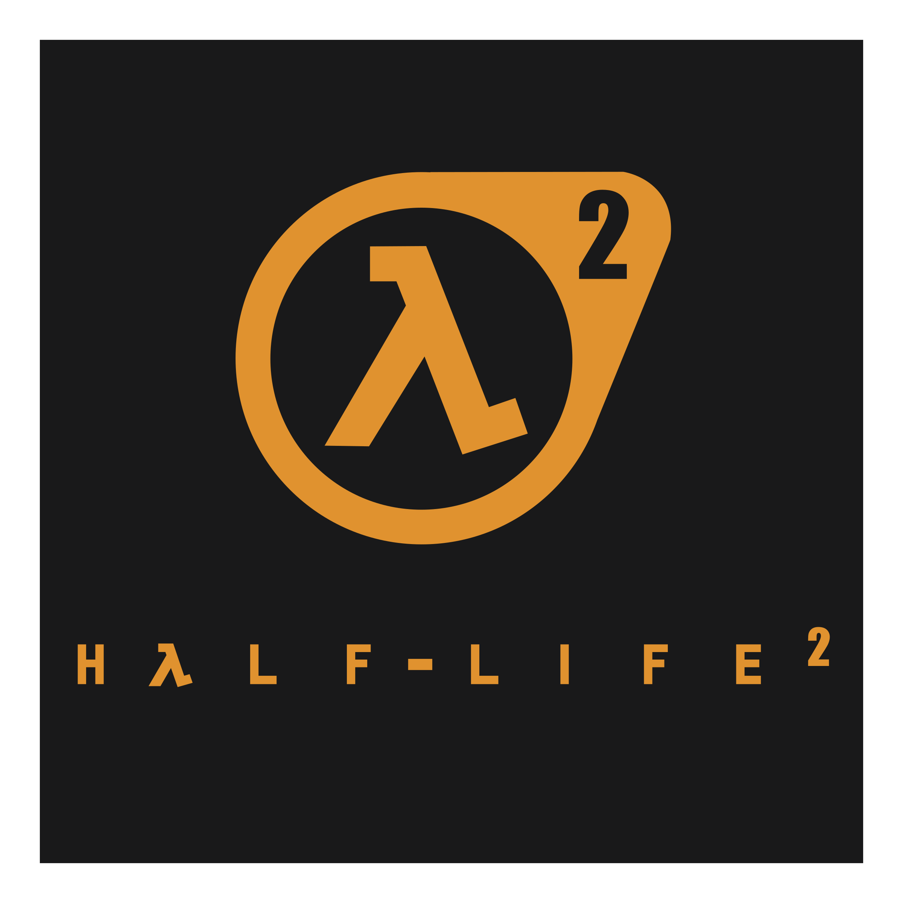

Half-Life 2 is a single-player first-person shooter developed and published by the Valve corporation. It is a sequel to the original Half-Life released in 1998 and was released with both Valve's Steam software and the source engine. The game was a hit success and won over 30 game of the year awards along with "Game of the decade." It is also considered by many to be one of the greatest games of all time.
